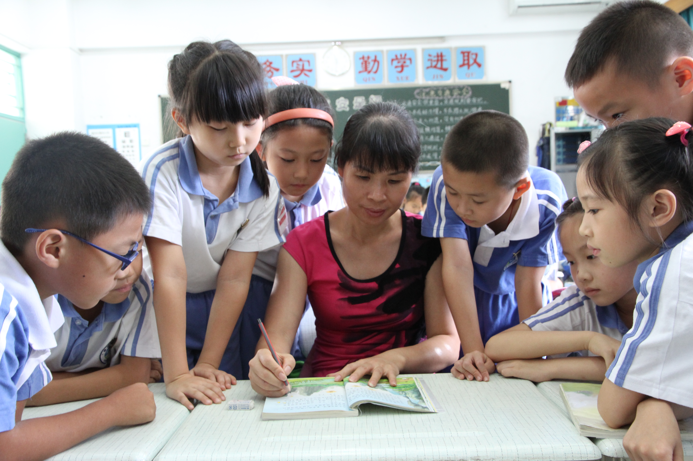

罗旋芳，蒲城县北关小学-蒲城县桥山中学语文老师。曾获福田区“优秀班主任”、“优秀党员”称号。从教23年，一直担任班主任工作。她始终认为，责任心是师德的重要内容，也是师 德的外在表现，没有责任心，也就没有真正的教育。责任心让她在平凡、普通、细微甚至琐碎的工作中创造奇迹。
责任心是种力量
光阴似箭，日月如梭，不知不觉之间，自己踏入教育战线已经23个年头了，加上3年的师范教育，跟教育事业已有26年的不解之缘。在这26年里，想到自己从 一名懵懵懂懂的学生，到陪伴一届届的学生成长成人，一种作为教育工作者的自豪之情油然而生。
责任心，让我时刻陪伴着孩子们。
责任心对于任何一个工作任何一件事情都显得尤其重要。一个人做事，如果没有责任心，是很难长期做好一项工作的。作为教育工作者，责任心对于一个老师来说 ，其中的重要性在经历了多年的班主任工作之后，才深深地体会到个中的分量。因为作为一个老师，其中的工作所影响的是一个个孩子。工厂出了差错，可以将产品直接当废品处理掉，但是如果教师的 工作出了差错，将会直接影响到一个学生未来漫长的生活和人生。如果因为我的责任心强，工作到位，能够让一个学生在未来获得有一点正能量延伸，我会感到无比欣慰，但是如果因为我的工作疏忽， 让一个学生在未来的学习生活中蒙受阴影，我的内心会一辈子不能安宁。在这个意识的驱动下，再加上班主任的工作职责所在，我始终做到将自己对学生的责任从文化学习到每一个学生的健康成长的全 覆盖上，用一个教师的爱去呵护学生快乐健康地成长。
记得前年刚刚接手一年级新生的时候，由于准备充分，一切工作都顺利有序地开展着。看到一群新的可爱的小脸庞，似乎看到了一朵朵含苞待放的花骨朵，心里面 洋溢着一种青春和慈爱的感觉。青春是因为小朋友的活力直接感染了我，慈爱是因为深深地感觉到这些小朋友刚刚离开家长的臂膀，将会跟我们一起生活学习了，我有深深的责任必须像家长一样关爱他 们。但是很快，我就发现了一个跟往年不一样的情况，有一位学生的妈妈总是站在教室后面不愿意离开。开始我们还以为家长不放心孩子，且不了解学校的管理制度，因此想跟自己的宝贝小孩伴读，但 是经过跟这位妈妈的沟通，我才发觉事情远非我想象的那么简单，因为这位年轻的妈妈在交流中表现出一种亢奋和焦虑的情况，根本无法接受学校任何规劝和说明，而且非常容易进入一种很激动的状态 ，完全无法进行有效的沟通，甚至表现出一些对其他小朋友的攻击性倾向。为了控制整个事态的发展，我一方面及时向学校领导汇报了情况，希望能够通过学校正常的渠道去处理这个问题。同时，这位 妈妈对小朋友攻击性的行为也给我带来了深深的不安。于是我主动跟这位孩子的爸爸取得联系，了解到这位家长患有严重忧郁症，谁也无法劝阻她离开她的小孩半步，是一位情绪和行为都非常反常的家长。
这种情况，我也是第一次遇到，开始也焦急，迷惑，不知道怎么处理才合适，但是教师的高度责任感驱使我，无论如何，我必须保证我们班的学生最起码的安全。因此，我做了一个决定，不管是不是我的课，每一次课间，我都留在教室里陪伴着孩子们，直至下一节课的老师到班。除了其他科任上课，其它时间我都全程留在教室，跟孩子们聊天，玩游戏等。说不 辛苦，那是假的。但希望通过自己力所能及的努力能够保护好我们班的学生。功夫不负有心人，这种最原始的方法居然产生了意想不到的效果，慢慢地，这位妈妈跟我有了越来越多的交流，对学校新的 环境也慢慢地熟悉和放心了。看到这个情况，我心里面也就越来越有方向了，因此，一方面通过陪伴用时间去消除这位妈妈的疑虑，另外一方面对这个孩子多几分的关注，让她感觉自己的小孩在新的环 境里面很开心。另一个途径就是不断通过跟孩子爸爸的沟通，了解到这位妈妈跟姥姥和姥爷比较容易沟通。一分辛劳一分收获，在大家的努力下，有一天，小孩的姥姥和姥爷特地从老家赶过来；有一天 ，这位妈妈好像放心了，把她的小孩交给我们，没有再跟小孩一起上学了。我的班级，从此恢复了正常的也是少有的平静。
这件事情在我的从教生涯中，也算是一件让我感触比较大的一件事情，说真的，我还是第一次遇到这么棘手的问题，面对一个有重度忧郁症的家长妈妈，如果我们 处理方式稍有不合适，都可能带来大家想象不到的局面，但是唯有这种对学生和工作高度负责的心，那就让我选择时刻跟我的学生们在一起，最终圆满地解决了这个问题。
做实做细，养成孩子良好习惯
对于我们这些小学教育工作者来说，由于小学生的自治能力以及家长对小孩的额外关心呵护，更加需要我们把工作做细做实。
为了培养学生早读习惯，保证早读的时间，我首先做孩子们的表率。不管是不是安排我的早读课，我都保证在7点50分前赶到教室，让学生们感觉到老师跟他们在 一起执行早读的制度。其次，多表扬。在课堂上，坚持表扬早读做的好的孩子，同时在课余时间，坚持通过班级QQ群，表扬早到校，自觉读书的孩子。渐渐地，家长们也感受到了早读给孩子带来的正面 促进，也重视早读了，天天督促孩子按时到校参加早读。
为了培养学生热爱劳动的品质，培养劳动技能，每一次大扫除，我都是挽起袖子跟小朋友一起快乐地参与到劳动最光荣的活动中。记得刚上二年级的学生第一次大扫除，我提前告知家长大扫除孩子要完成的任务，希望家长预先进行练习，然后亲自指导孩子们怎样擦玻璃，抹墙壁，摆物品等，并加入到大扫除的整个过程。最后，孩子们把窗户擦得蹭亮蹭亮，把窗 台清扫、冲洗得干干净净，把教室里藏灰尘的地方都抹个遍。让我没有想到的是，孩子们竟然把窗外防盗网的一根根管子都擦得亮亮的。看到这里，我的心头涌上一股暖流，每根窗棱上似乎都映射着一 个小朋友灿烂的笑容。也许孩子们并没有意识到这是他们劳动责任意识的延伸，但是我却看到了责任之心在我的教学生活中慢慢发芽萌育，并且在感化着和影响着周围的人。
作为一名人民教师，这是一个平凡的岗位，但却担负着影响每一个生命健康成长的重大责任。作为小学教育工作者，特别是低年级的教师，由于学生都是刚刚从家 长的呵护中走到一个陌生的集体环境的孩子，老师们除了正常的教学工作，更多需要面对的是学生学习和成长的问题。每天的班主任工作、教学工作繁琐而繁重，是什么支撑我这一路始终满怀饱满的热 情投入到每天紧张有序的工作生活之中的呢？
对，就是一颗超强的责任心。因为有了责任心，我总是会保持积极向上勇于解决问题的精神，而不是消极的躲避和推卸；因为有了责任心，我总是认真地对待每一 天的教学工作，认真地进行备、教、批、辅、改；因为有了责任心，我总是细致地对待出现在每一个孩子身上的小问题，观察，谈心，疏导。责任心是美，责任心是爱，责任心就是一种力量。
